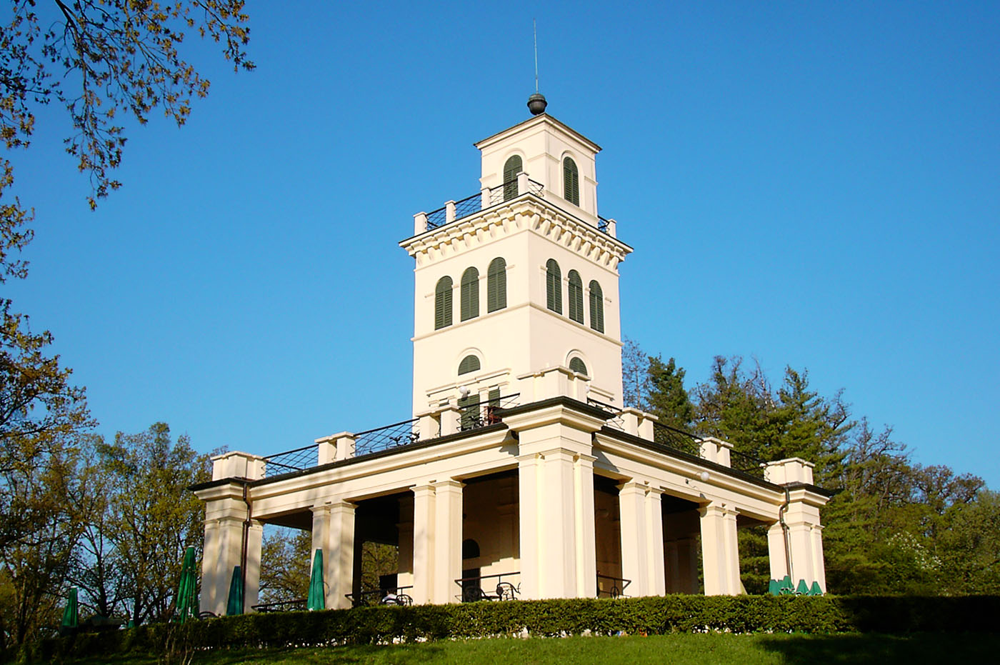
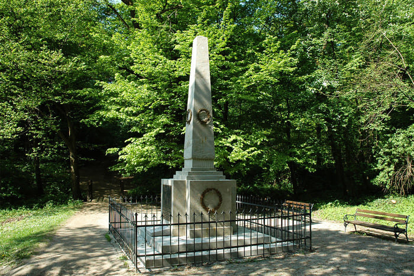
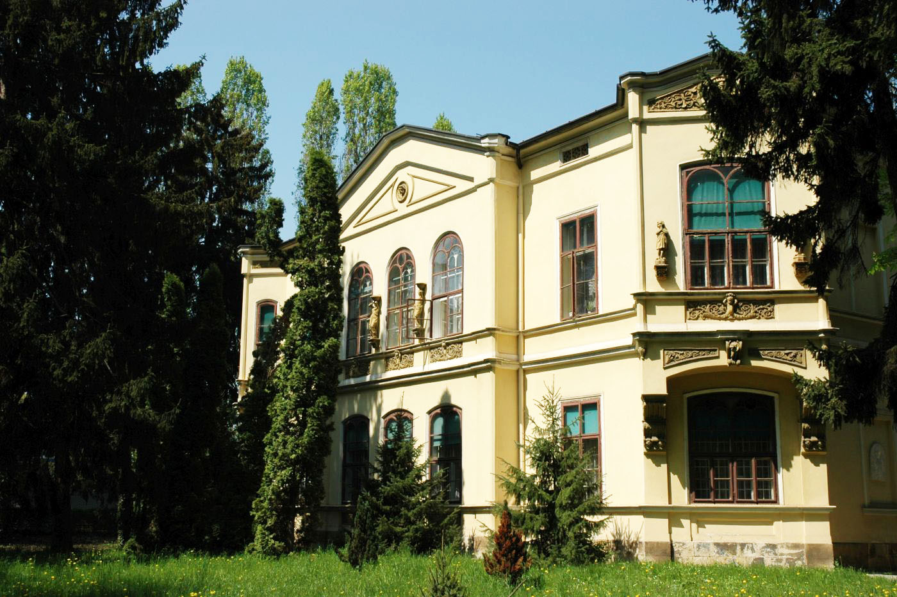

Znamenitosti
Kapelica sv. Jurja
Neogotička kapelica popularno nazvana »crikvica« izgrađena u razdoblju od 1862. do 1864. godine na mjestu gdje se prije nalazio Narodni hram.
Vidikovac
Poznat i pod nazivom Kiosk, izgrađen je u razdoblju od 1841. do 1843. godine, prema projektu Franza Schüchta. Najistaknutiji je objekt.
Obelisk
Spomenik u obliku piramide djelo je kipara Josepha Käschmanna koji je nadbiskup Juraj Haulik 1843. godine dao postaviti u Dolini dalija.
Novi ljetnikovac biskupa Haulika
Sagrađen je kako se pretpostavlja 1855. godine, ali ne postoje pouzdani izvori o tome. Pročelje s plitkim rizalitom koji završava niskim trokutastim zabatom.

Švicarska kuća
Jednokatnica poznata i pod nazivom Tirolska kuća, građena je prema nacrtu Franza Schüchta, tijekom 1841. godine, a dovršena u jesen 1842.

Sokolska Mogila
Jedan od simbola parka Maksimir danas je svakako i MOGILA, svojevrsan spomen-humak nastao 1925. godine povodom obilježavanja tisućugodišnjice hrvatskog kraljevstva.